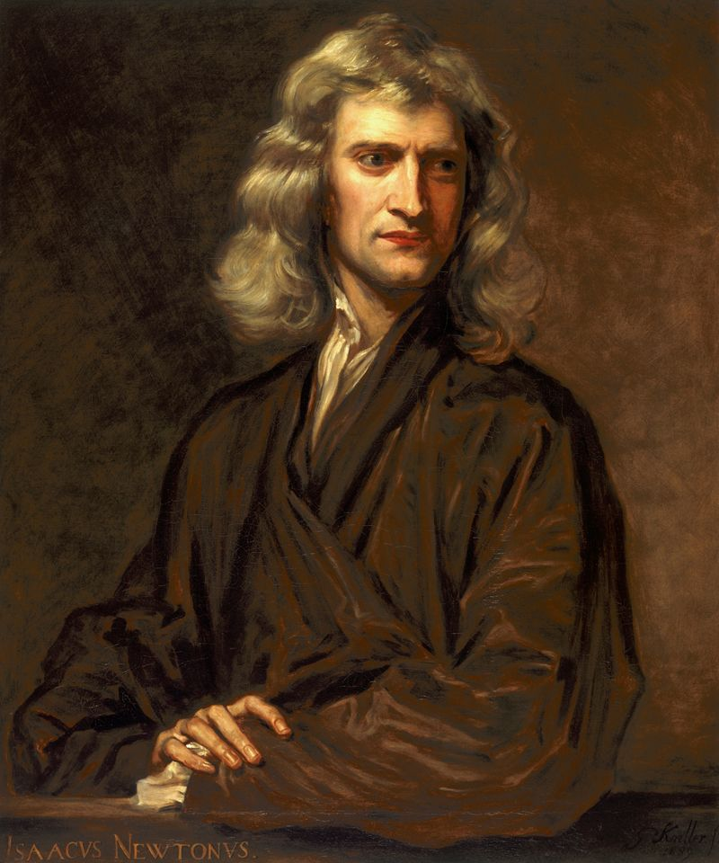

Sir Issac Newton discovered that for every action force, there is an equal and opposite reaction force.
The aforementioned is Newton’s third law of motion and is one of the fundamental principles dictating the success
of rockets. On earth, there is a thick atmosphere that allows for a variety of different sources of lift. Hot air
balloons, airfoils, jet engines, and even electricity are to name a few. In space, however, there are negligible
amounts of gas particles restricting the use of traditional methods of flight. Rockets work in space since they
don't need an atmosphere to function.
